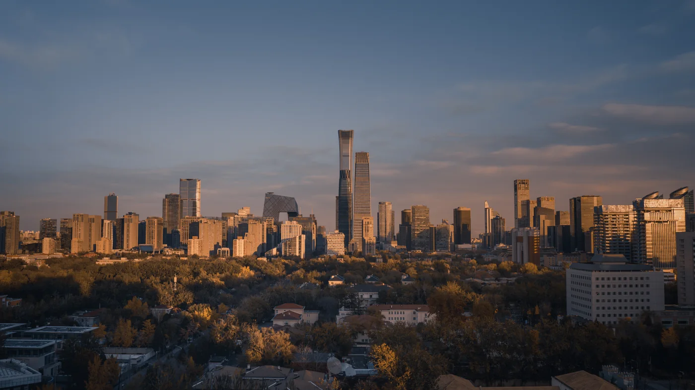

Portfolio
Séries choisies
Paysages, portraits, fleurs et vues drone : une sélection de séries réalisées à Pékin, en Chine et au Bénin.

Portfolio
Paysages, portraits, fleurs et vues drone : une sélection de séries réalisées à Pékin, en Chine et au Bénin.